Kapil Kumar Meena
Postdoctoral Researcher, University of California, Los Angeles
I am a postdoctoral researcher in the HUMAN Lab at the University of California, Los Angeles, working with Prof. Youngseo Kim. I study how people make travel decisions when the air is polluted, the day is hot or the information is new, and I build the methods and tools that turn this evidence into better routes, prices and policies.
I received my Ph.D. in Transportation Engineering from IIT Kharagpur in 2026, advised by Prof. Arkopal Kishore Goswami, and my M.Tech from IIT Roorkee, advised by Prof. Amit Agarwal. In 2024 I was a visiting research fellow at the Institute for Transport Studies, University of Leeds, and in 2021–22 a research intern at WRI India, working on commuter exposure and electric mobility.
My work runs from field data I collect (on-road exposure measurements and a two-wave panel of 723 commuters in Kolkata), through new estimation methods for discrete choice models, to software that people use: the DRUM routing app, featured in The Hindu and the basis of a published patent.
9 journal articles · 7 under review · 17 conference papers · 1 published patent · reviewer for 8 journals
News
- 2026
Two papers accepted for presentation at the 106th TRB Annual Meeting, Washington, DC, January 2027: seasonal air-quality preferences in mode choice and conflict screening from a single traffic image.
- Jul 2026
Our patent application on a personalised dynamic route planning system for sustainable urban mobility was published by the Indian Patent Office (No. 202631018379).
- 2026
Joined the HUMAN Lab at UCLA as a postdoctoral researcher.
- 2026
Completed my Ph.D. at IIT Kharagpur. Thesis: Assessing impacts of perceived air pollution exposure on urban travel behaviour.
- Jan 2026
Presented “Not all travellers think alike” at the 105th TRB Annual Meeting in Washington, DC. The full paper is accepted in Transportation Research Record.
- 2026
Two papers on estimating air quality from sparse sensor networks, at IEEE COMSNETS and IEEE AIEI.
- Jun 2025
The Hindu wrote about DRUM, our pollution-aware routing app.
- 2025
Invited talk on DRUM at Google India.
- Apr 2025
The DRUM paper was published in Transportation Research Record.
- 2024
Visiting research fellow at the Institute for Transport Studies, University of Leeds.
Research
Standard travel models describe choices mainly through time and cost. In Indian cities people also weigh the air they breathe, the heat they walk through, and whether they trust the information in front of them. I study these trade-offs with data I collect in the field, estimate them with methods I develop, and carry the results into tools and policy.
Field data
- On-road PM2.5 sensing across transport micro-environments
- Stated-preference experiments and two-wave commuter panels
- Street and traffic images
Models
- Discrete choice: hybrid latent class, ICLV, panel mixed logit
- Convex estimation of nested and IPD logit models (PD‑MUSE)
- Geostatistical deep learning; graphs with grounded LLMs
Decisions
- DRUM routing app and a published patent
- Pricing and allocating shade
- Information design for EV charging
- Evidence for clean-air and heat policy
Settings: air pollution, heat, electric mobility and road safety, in Delhi, Kolkata, Mumbai, Kharagpur and tier-2 and tier-3 Indian cities.
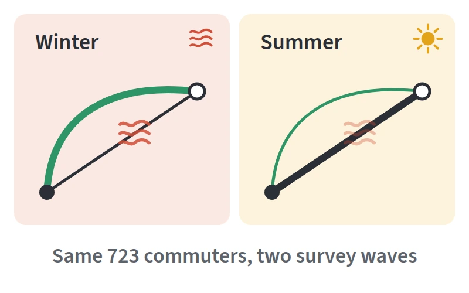
Travel under air pollution and heat
I measure what commuters inhale across transport micro-environments (TPMDC 2022, J-EASTS 2025) and how they perceive it (JTH 2023). In a two-wave panel that followed the same 723 commuters in Kolkata from winter to summer, air quality carried about four times more weight in route choice in winter, and a pre-trip AQI alert was valued more than an equivalent cut in exposure (TBS, in revision). Hybrid latent class models separate commuters by how much exposure enters their decisions (TRR 2026). I am extending this to heat: how people value shade and where a city should provide it (Transport Policy, under review), and how heat changes when and how people travel (HEAT, at UCLA).
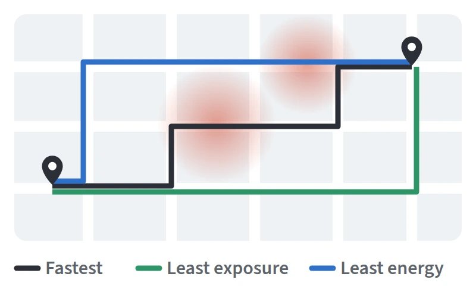
Information and decision tools
What travellers can do depends on what they know. I built DRUM, a routing engine that offers least-exposure and least-energy routes next to the shortest and fastest ones. In simulations for Central Delhi the least-exposure route cut exposure by half for 40% more travel time (TRR 2025). DRUM was featured in The Hindu and is the basis of a published Indian patent. Related work studies how information about public chargers shapes choice, reliability and trust in EV charging (TR-D, in revision), how air-quality awareness relates to travel (DAJ 2024), and how to encourage cycling to suburban rail and prioritise transit-oriented development (IJST 2025, STL 2025).
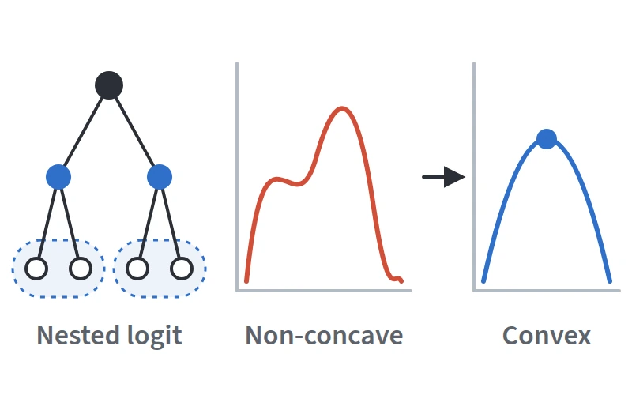
Estimation methods and behaviourally grounded AI
I develop methods that keep the structure of choice models while using what machine learning does well. PD‑MUSE recasts the non-concave estimation of nested and inverse product-differentiation logit models as a convex program plus a bounded, low-dimensional search (TR-C, under review). Other work joins econometric theory with deep learning for mode-choice prediction (TR-A, under review), estimates air quality from sparse sensor networks (COMSNETS 2026, AIEI 2026), and audits whether a single traffic image, read through a heterogeneous graph and a grounded LLM, can support conflict screening in mixed Indian traffic (TRB 2027, IATSS Research, under review).
Publications
A published patent, 9 journal articles, 7 manuscripts under review and 17 conference papers. Also on Google Scholar.
Patent
-
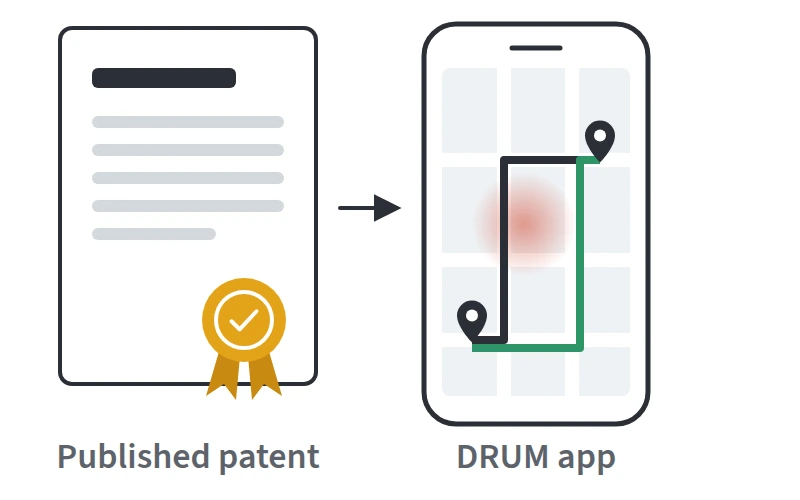
Personalised dynamic route planning system for sustainable urban mobility K. K. Meena, A. K. Goswami Patent 2026 Indian Patent Application No. 202631018379, published 31 July 2026The personalised routing system behind DRUM, which offers commuters routes that trade travel time against pollution exposure and energy use.
DRUM appRelated paperMedia: The Hindu
Media coverage

A feature on DRUM and the IIT Kharagpur team that built it, with results from the Delhi simulations.
Read onlinePrint pageJournal articles
-
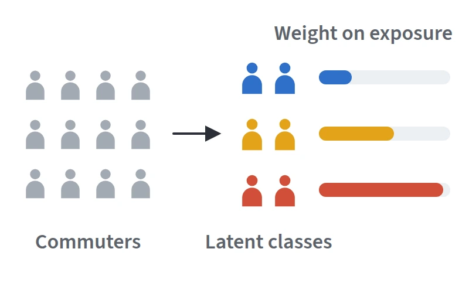
Not all travellers think alike: Segmenting travel behaviour under air pollution exposure using a hybrid latent class and discrete choice approach K. K. Meena, A. K. Goswami TRR 2026 Transportation Research Record, acceptedA hybrid latent class choice model that separates commuters by how strongly air-pollution exposure enters their travel decisions.
DOI@article{meena2026travellers, title = {Not all travellers think alike: Segmenting travel behaviour under air pollution exposure using a hybrid latent class and discrete choice approach}, author = {Meena, K. K. and Goswami, A. K.}, journal = {Transportation Research Record}, year = {2026}, doi = {10.1177/03611981261429472} } -
Dynamic route planning for urban green mobility: Development of a web application offering sustainable route options to commuters K. K. Meena, A. K. Singh, A. K. Goswami TRR 2025 Transportation Research Record
DRUM, a web app that offers five routes: shortest, fastest, least exposure, least energy, and a balanced option. In simulations for Central Delhi, the least-exposure route cut exposure by 50% for 40% more travel time.
DOIAppPatentMedia: The Hindu@article{meena2025dynamic, title = {Dynamic route planning for urban green mobility: Development of a web application offering sustainable route options to commuters}, author = {Meena, K. K. and Singh, A. K. and Goswami, A. K.}, journal = {Transportation Research Record}, year = {2025}, doi = {10.1177/03611981251331011} } -
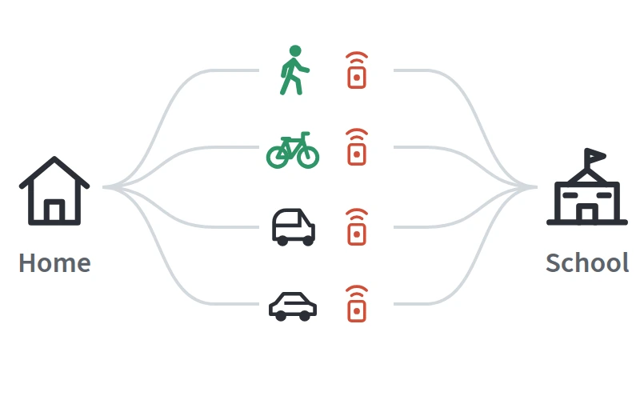
Assessing air pollution exposure to school children in different modes of transport while commuting to school: A case of Kharagpur, India A. Sumbhate, K. K. Meena, A. K. Goswami J-EASTS 2025 Journal of the Eastern Asia Society for Transportation Studies, 16Compares the air pollution that school children take in on different modes of travel to school in Kharagpur.
DOI@article{sumbhate2025school, title = {Assessing air pollution exposure to school children in different modes of transport while commuting to school: A case of Kharagpur, India}, author = {Sumbhate, A. and Meena, K. K. and Goswami, A. K.}, journal = {Journal of the Eastern Asia Society for Transportation Studies}, volume = {16}, year = {2025}, doi = {10.11175/easts.16.PP3879} } -
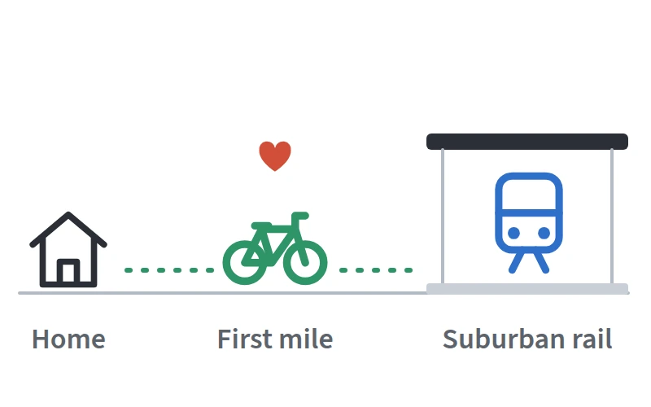
Modeling bicycle choice behavior and its potential health impact: Case of first/last mile access to suburban rail B. S. Manoj, K. K. Meena, H. Panchal, G. Sharma, A. K. Goswami IJST 2025 International Journal of Sustainable TransportationModels who would cycle the first or last mile to suburban rail, and the health benefit if they did.
DOI@article{manoj2025bicycle, title = {Modeling bicycle choice behavior and its potential health impact: Case of first/last mile access to suburban rail}, author = {Manoj, B. S. and Meena, K. K. and Panchal, H. and Sharma, G. and Goswami, A. K.}, journal = {International Journal of Sustainable Transportation}, year = {2025}, doi = {10.1080/15568318.2025.2572818} } -
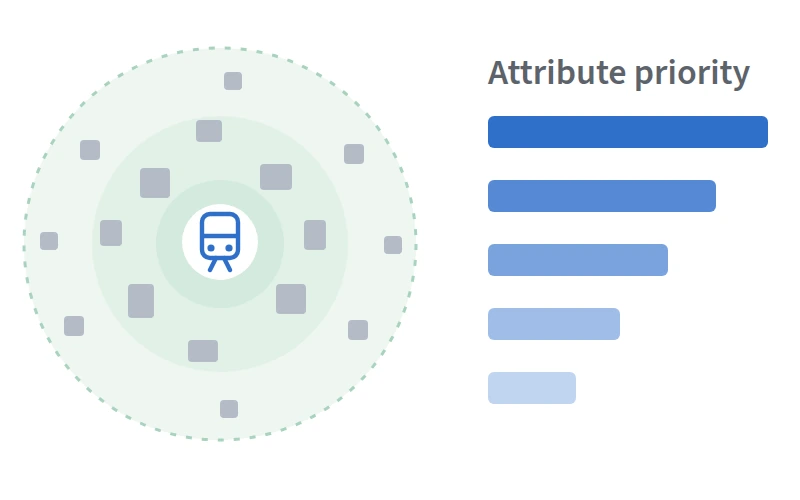
A prioritization framework to identify key attributes of transit-oriented development (TOD) using a multi-criteria decision-making (MCDM) approach: An Indian context B. S. Manoj, K. K. Meena, A. K. Goswami STL 2025 Sustainable Transport and Livability, 2Ranks the attributes of transit-oriented development for Indian cities with multi-criteria decision-making.
DOI@article{manoj2025tod, title = {A prioritization framework to identify key attributes of transit-oriented development ({TOD}) using a multi-criteria decision-making ({MCDM}) approach: An {Indian} context}, author = {Manoj, B. S. and Meena, K. K. and Goswami, A. K.}, journal = {Sustainable Transport and Livability}, volume = {2}, year = {2025}, doi = {10.1080/29941849.2025.2516475} } -
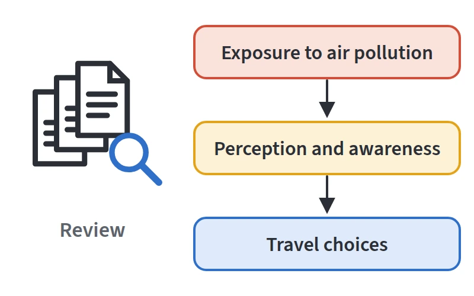
A review of air pollution exposure impacts on travel behaviour and way forward K. K. Meena, A. K. Goswami Transp. Policy 2024 Transport Policy, 154, 48–60What is known about how exposure to air pollution affects travel choices, and what has not yet been studied.
DOI@article{meena2024review, title = {A review of air pollution exposure impacts on travel behaviour and way forward}, author = {Meena, K. K. and Goswami, A. K.}, journal = {Transport Policy}, volume = {154}, pages = {48--60}, year = {2024}, doi = {10.1016/j.tranpol.2024.05.024} } -
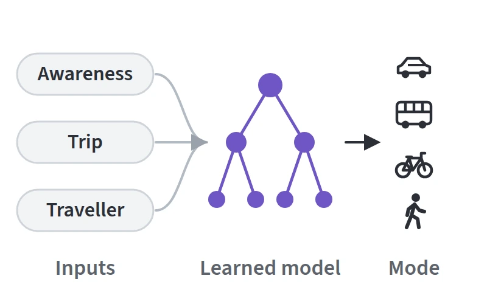
A machine learning approach for unraveling the influence of air quality awareness on travel behavior K. K. Meena, D. Bairwa, A. Agarwal DAJ 2024 Decision Analytics Journal, 11, 100459Uses machine learning to study how awareness of air quality relates to the way people travel.
DOI@article{meena2024machine, title = {A machine learning approach for unraveling the influence of air quality awareness on travel behavior}, author = {Meena, K. K. and Bairwa, D. and Agarwal, A.}, journal = {Decision Analytics Journal}, volume = {11}, pages = {100459}, year = {2024}, doi = {10.1016/j.dajour.2024.100459} } -
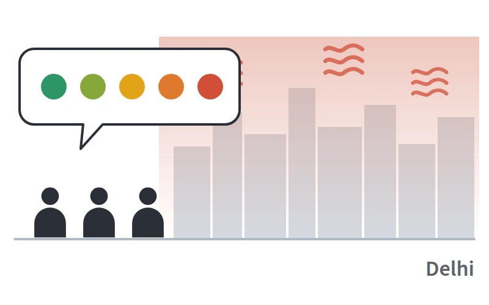
Perception of commuters towards air quality in Delhi K. K. Meena, V. Singh, A. Agarwal JTH 2023 Journal of Transport & Health, 31, 101643A survey of how Delhi commuters perceive the air they travel through.
DOI@article{meena2023perception, title = {Perception of commuters towards air quality in {Delhi}}, author = {Meena, K. K. and Singh, V. and Agarwal, A.}, journal = {Journal of Transport \& Health}, volume = {31}, pages = {101643}, year = {2023}, doi = {10.1016/j.jth.2023.101643} } -
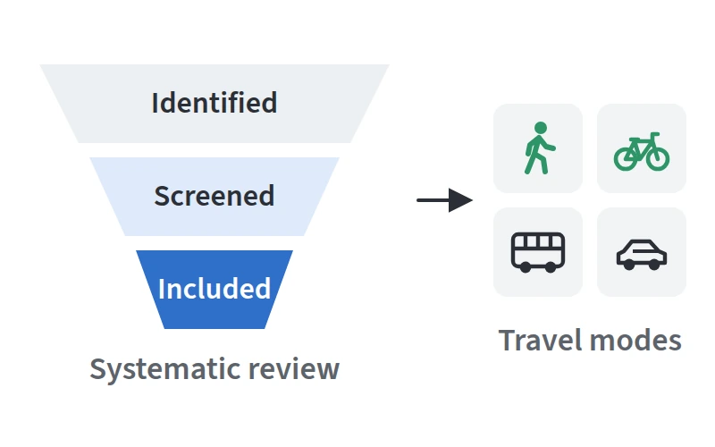
Travellers’ exposure to air pollution: A systematic review and future directions V. Singh, K. K. Meena, A. Agarwal Urban Climate 2021 Urban Climate, 38, 100901A systematic review of what travellers are exposed to across transport modes, and where research should go next.
DOI@article{singh2021travellers, title = {Travellers' exposure to air pollution: A systematic review and future directions}, author = {Singh, V. and Meena, K. K. and Agarwal, A.}, journal = {Urban Climate}, volume = {38}, pages = {100901}, year = {2021}, doi = {10.1016/j.uclim.2021.100901} }
Under review
-
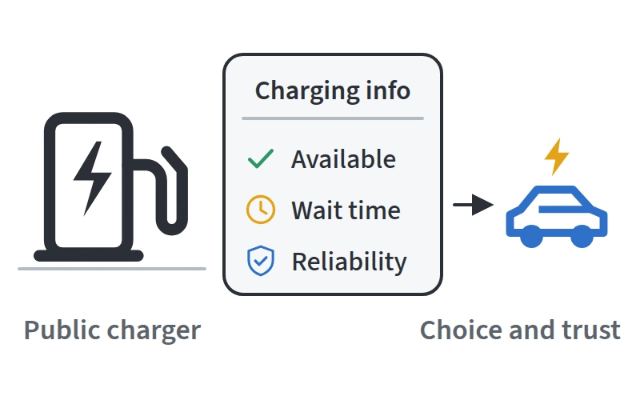
How charging information shapes choice, reliability, and trust in public EV charging K. K. Meena, S. V. Sesidhar TR-D 2026 Transportation Research Part D, second revisionHow information about public chargers affects which one drivers choose, and how reliable and trustworthy they find the network.
-
Do commuters reroute for cleaner air? Seasonal salience in route choice behaviour from a two-wave panel in Kolkata, India K. K. Meena, A. K. Goswami TBS 2026 Travel Behaviour and Society, first revision
The same 723 commuters surveyed in winter and again in summer (5,224 choices). Air quality weighs about four times more on route choice in winter, and a pre-trip AQI alert is valued more than an equivalent cut in exposure.
Preprint -
PD-MUSE: Primal-dual maximum-utility structured estimator for discrete choice models K. K. Meena, S. Tang, Y. Kim TR-C 2026 Transportation Research Part C, under review
Recasts the non-concave estimation of nested and inverse product-differentiation logit models as a convex program plus a bounded, low-dimensional search.
-
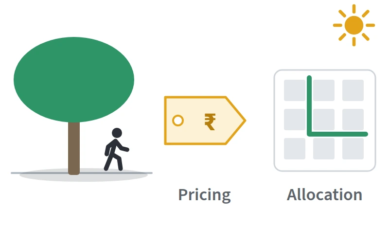
Pricing shade in urban mobility: Behavioural evidence and optimal allocation for heat-resilient access in Delhi S. V. Sesidhar, K. K. Meena Transp. Policy 2026 Transport Policy, under reviewBehavioural evidence on how people value shade in Delhi’s heat, and an optimal plan for where a city should provide it.
-
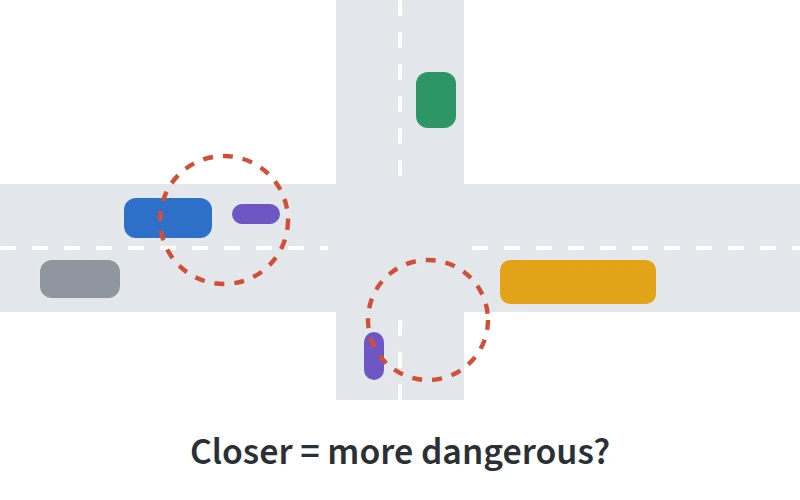
Are closer encounters really more dangerous? Evidence from conflict screening in heterogeneous traffic S. Basu, S. Guha Majumdar, K. K. Meena, S. V. Sesidhar IATSS Res. 2026 IATSS Research, under reviewAsks whether closer encounters between road users really signal greater danger when traffic is heterogeneous.
-
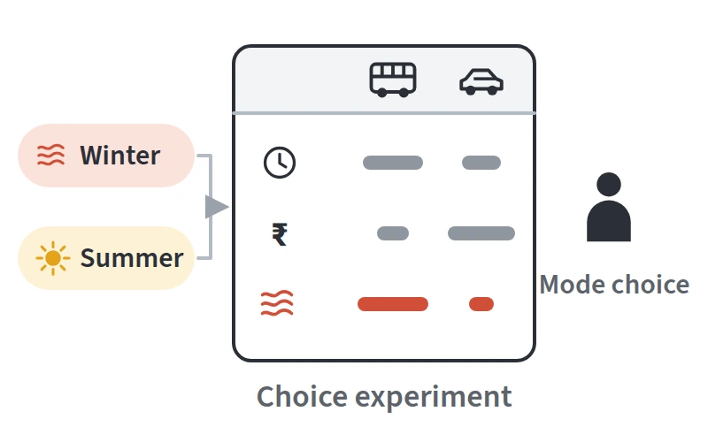
Beyond time and cost: Seasonal air-quality preferences in travel mode choice from a two-wave commuter panel K. K. Meena, A. K. Goswami TRR 2026 Transportation Research Record, under reviewMode choice in the same two-wave panel, with air quality as an attribute alongside time and cost. Also accepted for presentation at TRB 2027.
-
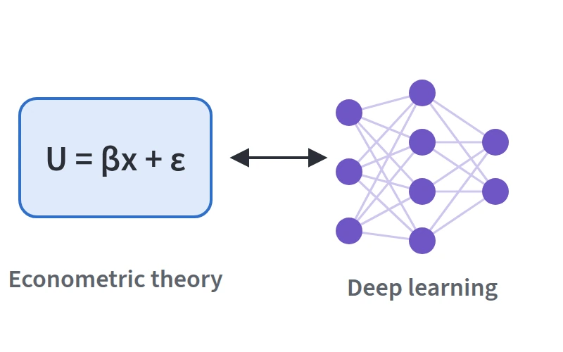
Beyond choice modelling: Bridging econometric theory and deep learning for robust mode choice prediction K. K. Meena, A. K. Goswami TR-A 2025 Transportation Research Part A, under reviewCombines random-utility theory with deep learning to predict mode choice more robustly.
Conference papers
- Beyond time and cost: Seasonal air-quality preferences in travel mode choice from a two-wave commuter panel K. K. Meena, A. K. Goswami TRB 2027 106th Annual Meeting of the Transportation Research Board, Washington, DC, accepted for presentation
- Can one traffic image support conflict screening? A validity audit of a heterogeneous graph and grounded LLM framework in unstructured Indian traffic S. Basu, S. Guha Majumdar, K. K. Meena, S. V. Sesidhar TRB 2027 106th Annual Meeting of the Transportation Research Board, Washington, DC, accepted for presentation
- Not all travellers think alike: Segmenting travel behaviour under air pollution exposure K. K. Meena, A. K. Goswami TRB 2026 105th Annual Meeting of the Transportation Research Board, Washington, DC
- Developing an integrated walkability score using image-based feature extraction and user preferences A. Singh, K. K. Meena, G. Sharma, A. K. Goswami, S. Mishra TRB 2026 105th Annual Meeting of the Transportation Research Board, Washington, DC; also accepted at WCTR 2026, France
-
A hybrid geostatistical and deep learning framework for urban pollutant concentration prediction from sparse data
C. Gupta, A. Amitabh, K. K. Meena, A. K. Goswami
COMSNETS 2026 18th International Conference on Communication Systems & Networks, IEEE
DOI
@inproceedings{gupta2026hybrid, title = {A hybrid geostatistical and deep learning framework for urban pollutant concentration prediction from sparse data}, author = {Gupta, C. and Amitabh, A. and Meena, K. K. and Goswami, A. K.}, booktitle = {18th International Conference on Communication Systems and Networks (COMSNETS)}, publisher = {IEEE}, year = {2026}, doi = {10.1109/COMSNETS67989.2026.11418296} } -
GeoNBeats: Unified spatio-temporal neural basis expansion for air quality estimation in sparse sensor networks
V. Joshi, K. K. Meena, A. K. Goswami
AIEI 2026 IEEE International Conference on AI Engineering and Innovation
DOI
@inproceedings{joshi2026geonbeats, title = {{GeoNBeats}: Unified spatio-temporal neural basis expansion for air quality estimation in sparse sensor networks}, author = {Joshi, V. and Meena, K. K. and Goswami, A. K.}, booktitle = {IEEE International Conference on AI Engineering and Innovation (AIEI)}, publisher = {IEEE}, year = {2026}, doi = {10.1109/AIEI69164.2026.11496657} } - Dynamic route planning for urban green mobility K. K. Meena, A. K. Singh, A. K. Goswami CTRG 2025 7th Conference of the Transportation Research Group of India, SVNIT Surat
- Assessing the air pollution exposure to school children in different modes of transport while commuting to school A. Sumbhate, K. K. Meena, A. K. Goswami EASTS 2025 Eastern Asia Society for Transportation Studies Conference, Jakarta
- A prioritization framework to identify key attributes of transit-oriented development (TOD) B. S. Manoj, K. K. Meena, A. K. Goswami WSSTL 2025 1st World Symposium on Sustainable Transport and Livability, IISc Bengaluru
- Accessibility assessment of urban public transit to key facilities through spatial analysis: A case study of Delhi R. Kodukulla, K. K. Meena, G. Sharma, A. K. Goswami TIPCE 2025 Transportation Infrastructure Projects: Conception to Execution, IIT Roorkee
- Air pollution exposure among Kolkata’s auto-rickshaw drivers: PM variability, health risks and predictive modelling S. Dasgupta, K. K. Meena, D. Majumdar, A. K. Goswami AEEE 2025 Advances in Energy Research, India
-
Impact of air pollution on informed decision-making for choice of a travel mode
K. K. Meena, R. Taneja, A. Agarwal
COMSNETS 2024 16th International Conference on Communication Systems & Networks, IEEE
DOI
@inproceedings{meena2024impact, title = {Impact of air pollution on informed decision-making for choice of a travel mode}, author = {Meena, K. K. and Taneja, R. and Agarwal, A.}, booktitle = {16th International Conference on Communication Systems and Networks (COMSNETS)}, publisher = {IEEE}, year = {2024}, doi = {10.1109/COMSNETS59351.2024.10427003} } - Breathable modes to school: Assessing the air pollution exposure of travel choices for school children in urban environments A. Sumbhate, K. K. Meena, A. K. Goswami UAA 2024 52nd Urban Affairs Association Annual Meeting, Nashville
- Analysing user behaviour along dedicated bicycle facilities in an urban environment P. Mohanty, K. K. Meena, A. K. Goswami UAA 2024 52nd Urban Affairs Association Annual Meeting, Nashville
- Assessing the willingness to bicycle for the first mile to the Mumbai suburban rail B. S. Manoj, K. K. Meena, H. Panchal, G. Sharma, A. K. Goswami IATBR 2024 17th International Conference on Travel Behaviour Research, Vienna
- A review of air pollution exposure impacts on travel behaviour and way forward K. K. Meena, A. K. Goswami WCTR 2023 16th World Conference on Transport Research, Montréal
- On-road pollution exposure in multiple transport micro-environments: A case study of tier-2 and tier-3 cities in India K. K. Meena, R. Kumar, A. K. Goswami TPMDC 2022 14th International Conference on Transportation Planning and Implementation Methodologies for Developing Countries, IIT Bombay
Software
-
DRUM: Dynamic Routing for Urban Mobility
Pollution-aware route planning for commuters, using live air-quality and traffic data. The basis of the TRR paper and the patent.
-
Stated-preference survey platform
Adaptive choice experiments with live response analysis. The instrument behind the two-wave Kolkata commuter panel.
-
Next-day PM2.5 forecasting
Machine-learning forecasts of next-day fine particulate concentrations, with an interactive global viewer.
-
India air-quality dashboard
City-level analysis of real-time air quality across India.
-
Cycling and motorcycle mode-share dashboard
Mode share of cycling and motorcycles in cities worldwide, with a model that predicts it.
-
Bharat Districts Explorer
District-level demographic and spatial data for India, on a map.
Teaching and talks
Teaching interests
I can teach the core courses in transportation engineering, traffic engineering and transportation planning, and electives in travel demand and discrete choice analysis, transportation data analytics and machine learning, and transport, environment and health.
Teaching assistant
- 2019–25
Multimodal Urban Transport (NPTEL); Intersection Design (CEN 662); Engineering Drawing (CE13001). IIT Kharagpur and IIT Roorkee.
Invited talks
- 2025
DRUM: pollution-aware dynamic routing for urban mobility. Google India.
- 2022
Transportation data analysis using real-world mobility data. NIT Calicut.
- 2022
Data visualisation and decision support using Tableau. Swastik Edustart.
Service
Reviewer: Transport Policy, Transportation Research Part A, Transportation Research Record, Travel Behaviour and Society, Journal of Transport & Health, Research in Transportation Business & Management, Expert Systems with Applications, PLOS Climate.
- 2025
Technical session chair, EASTS Conference, Jakarta.
- 2023–24
Overall coordinator, Annual Conference on Infrastructure (IBSR), IIT Kharagpur.
Member: ASCE Transportation & Development Institute; Transportation Research Group of India; World Conference on Transport Research Society; International Association for Travel Behaviour Research.
Awards and grants
- 2026
Institute travel grant (full funding) for the TRB Annual Meeting, IIT Kharagpur.
- 2024
International Research Exchange grant, University of Leeds and IIT Kharagpur.
- 2024
Institute travel grant (partial funding) for IATBR, Vienna, IIT Kharagpur.
- 2024
Best Presentation Award, Research Scholar Day, RCGSIDM, IIT Kharagpur.
- 2023
Best Poster Presentation, Cyber-Physical Systems Summit (CyPhySS), IISc Bengaluru.
- 2019–26
MHRD Fellowship, Ministry of Education, Government of India.
- 2019
GATE Civil Engineering, All India Rank 559.